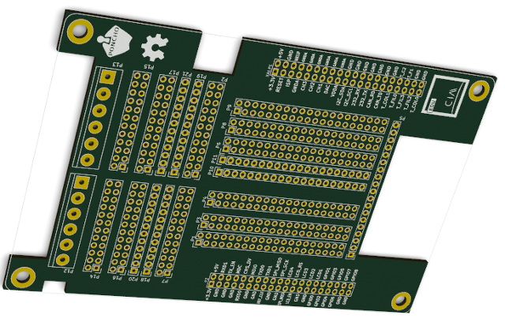

La EDU-CIAA es la versión educativa del Proyecto CIAA y tiene la posibilidad de expandirse mediante placas de expansión llamadas Ponchos.
Este template se puede tomar como base para crear un Poncho (Shield o módulo enchufable) que utilice los cuatro agujeros de sujeción de la EDU-CIA.
La información sobre Ponchos se puede encontrar en:
Ponchos de la EDU-CIAA.
Más información sobre este Poncho en: Ponchos Modelos.
El módulo de base utilizado posee los conectores del poncho, lo agujeros de sujeción y en la serigrafía el contorno de la EDU-CIAA. El contorno del PCB puede calcarse o ajustarse según la necesidad. Para conocer la posición de los componentes en la EDU-CIAA, en las bibliotecas del proyecto hay una plantilla que puede cargarse y superponerse: kicad/Poncho_Esqueleto.pretty/Plantilla_EDU-CIAA.kicad_mod.
Una vista del modelo:

Proyecto CIAA
Consultas sobre este Poncho a: Diego Brengi (unlam.lacie@gmail.com)